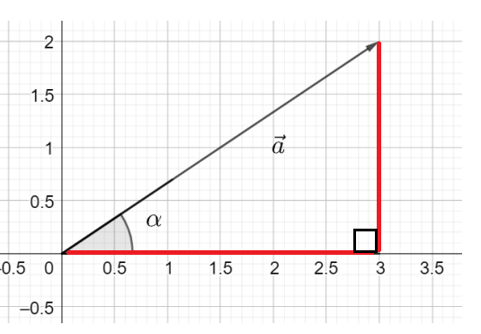
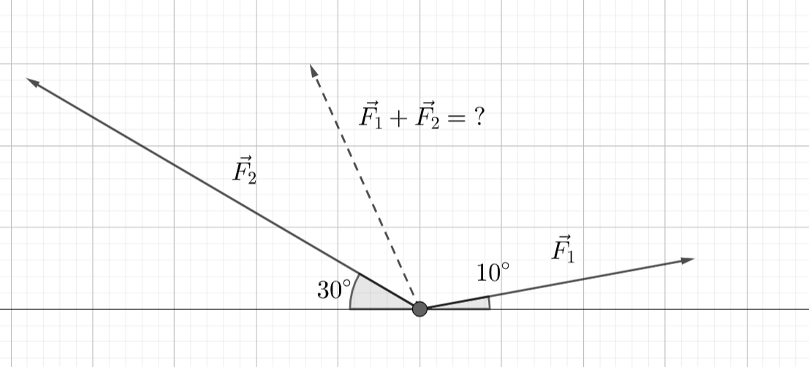
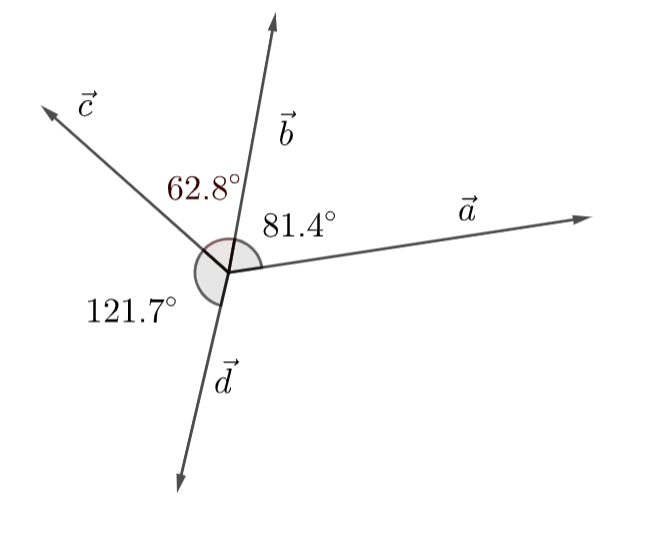
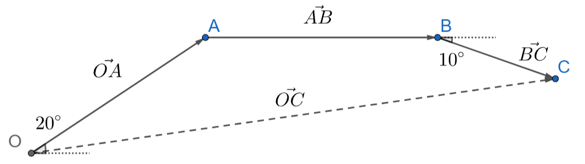

Mittaustuloksista vektoreiksi
Contents
Mittaustuloksista vektoreiksi#
Vektorit ovat kätevä tapa esittää täsmällisesti, miten jostakin pisteestä päästään johonkin toiseen pisteeseen. Käytännössä kuitenkin esimerkiksi maanmittaustekniikassa siirtymät esitetään toisella tavalla. Tällöin pisteiden välisiä siirtymiä määrittävät etäisyydet ja suuntakulmat. Tällaisetkin tulokset voidaan ilmaista vektorina. Silloin vektorin esitystavasta käytetään nimitystä napakoordinaattimuoto tai napakoordinaattiesitys.
Sama vektori voidaan siis esittää sekä komponenttimuodossa (eli kantavektorien ja niiden kertoimien avulla) että napakoordinaattimuodossa. Tässä luvussa opetellaan muunnokset muodosta toiseen, sillä vektorien laskukaavat toimivat vain komponenttimuotoisille vektoreille. Napakoordinaattimuoto on määritelty vain tason vektoreille.
Napakoordinaattimuoto#
Vektorin \(\vec{a}\) napakoordinaattimuoto koostuu vektorin pituudesta \(|\vec{a}|\) ja vektorin suuntakulmasta \(\alpha\). Esitysmuoto \(\vec{a}=|\vec{a}| \angle \alpha\) ei tarkoita kertolaskua, vaan on tiivistetty tapa ilmoittaa pituus ja suuntakulma.
Vektorin suuntakulma määritellään positiivisen \(x\)-akselin ja vektorin välisenä kulmana, ja se saadaan laskettua vektorin komponenteista suorakulmaisen kolmion geometrian avulla. Tarkemmin ilmaistuna suuntakulman tangentin saa kantavektorien \(\vec{i}\) ja \(\vec{j}\) kertoimien suhteesta. Laskukaavoja tähän ei kannata opetella ulkoa, kuten seuraavasta kappaleesta selviää.
Komponenttimuodosta napakoordinaattimuotoon#
Vektorin muuttaminen komponenttimuodosta napakoordinaattimuotoon kannattaa aloittaa hahmottelemalla, missä koordinaatiston neljänneksessä vektorin kärki on, kun se piirretään alkamaan origosta. Koordinatiston neljännekset on määritelty seuraavan kuvan mukaisesti siten, että 1. neljännes on koordinaatiston alueella, jossa sekä \(x\):n että \(y\):n arvot ovat positiivisia, ja muut neljännekset seuraavat kiertämällä koordinaatistossa vastapäivään.

Jos vektorin \(\vec{a}=a_x \vec{i}+a_y \vec{j}\) ja \(x\)-akselin välinen kulma on alle 90 astetta, eli vektorin kärki sijaitsee koordinaatiston 1. neljänneksessä, niin suuntakulma on \(\alpha=\arctan{\frac{a_y}{a_x}}\). Esimerkiksi seuraavan kuvan vektorin \(\vec{AB}=3\vec{i}+2\vec{j}\) ja \(x\)-akselin välinen kulma \(\alpha\) saadaan ratkaistua seuraavasti:
\(\tan{\alpha}=\frac{2}{3} \leftrightarrow \alpha=\arctan{\frac{2}{3}} \leftrightarrow \alpha \approx 33.69^{\circ}\).

Napakoordinaattimuotoon tarvitaan lisäksi vektorin \(\vec{a}\) pituus, joka on \(|\vec{a}|=\sqrt{3^2+2^2}=\sqrt{13}\). Vektorin \(\vec{a}\) napakoordinaattiesitys on siis \(\vec{a}=\sqrt{13} \angle 33.69^{\circ}\).
Jos vektorin kärki on koordinaatiston jossakin muussa kuin 1. neljänneksessä, muunnoksessa tarvitaan sopivia apukulmia. Esimerkkejä erilaisista tilanteista on seuraavana. Tarkista lopuksi, että laskemasi suuntakulma sopii siihen koordinaatiston neljännekseen, jossa vektorin päätepiste on.
Esimerkki
Määritä seuraavien vektorien napakoordinaattiesitykset.
a) \(\vec{a}=2.56 \vec{i} + 4.67 \vec{j}\)
b) \(\vec{b}=-1.12 \vec{i} + 3.13 \vec{j}\)
c) \(\vec{c}=-4.50 \vec{i} – 2.55 \vec{j}\)
d) \(d=2.76 \vec{i} – 4.32 \vec{j}\)
Ratkaisu
Hahmotellaan aluksi vektorit koordinaatistoon ja piirretään tarvittavat apukulmat:

a) Vektorin pituus on \(\sqrt{2.56^2+4.67^2} \approx 5.33\).
Kuvasta nähdään, että suuntakulma on \(\alpha=\arctan{\frac{4.67}{2.56}} \approx 61.27^{\circ}\).
Vektori voidaan siis esittää muodossa \(\vec{a}=5.33 \angle 61.27^{\circ}\).
b) Vektorin pituus on \(\sqrt{(-1.12)^2+3.13^2}\approx 3.32\).
Kuvasta nähdään, että suuntakulma on \(90^{\circ}+\arctan{\beta'}=90^{\circ}+\arctan{\frac{1.12}{3.13}}\approx 109.7^{\circ}\).
Vektori voidaan siis esittää muodossa \(\vec{b}=3.32 \angle 109.7^{\circ}\).
c) Vektorin pituus on \(\sqrt{(-4.50)^2+(-2.55)^2}\approx 5.17\).
Kuvasta nähdään, että suuntakulma on \(180^{\circ}+\arctan{\gamma'}=180^{\circ}+\arctan {\frac{2.55}{4.50}} \approx 209.5^{\circ}\).
Vektori voidaan siis esittää muodossa \(\vec{c}=5.17 \angle 209.5^{\circ}\).
d) Vektorin pituus on \(\sqrt{2.76^2+(-4.32)^2} \approx 5.13\).
Kuvasta nähdään, että suuntakulma on \(270^{\circ}+\arctan{\delta'}=270^{\circ}+\arctan{\frac{2.76}{4.32}}\approx 302.6^{\circ}\).
Vektori voidaan siis esittää muodossa \(\vec{d}=5.13 \angle 302.6^{\circ}\).
Napakoordinaattimuodosta komponenttimuotoon#
Napakoordinaattimuotoinen vektori saadaan aina helposti muutettua komponenttimuotoon. Jos \(\vec{a}=|\vec{a}| \angle \alpha\), niin
\(a_x=|\vec{a}| \cos{\alpha}\)
\(a_y=|\vec{a}| \sin{\alpha}\)
millä tahansa kulman \(\alpha\) arvolla.
Esimerkiksi vektorin \(\vec{a}=1.12 \angle 147^{\circ}\) komponenttimuotoinen esitys on \(\vec{a}=1.12 \cos{147^{\circ}} \vec{i} + 1.12 \sin{147^{\circ}} \vec{j} \approx -0.94 \vec{i}+0.61 \vec{j}\).
Muunnos komponenttimuotoon on tarpeellinen, sillä esimerkiksi vektorien yhteenlasku on määritelty vain komponenttimuotoisille vektoreille. Geometrian lisäksi tällaisia laskuja voi soveltaa esim. fysiikassa, kun lasketaan samaan kappaleeseen vaikuttavien eri suuntaisten ja eri suuruisten voimien yhteisvaikutusta. Tällöin vektorin pituudella kuvataan voiman suuruutta newtoneina. Voimavektorien summa määrittää ns. kokonaisvoiman, joka puolestaan vaikuttaa kappaleen liikkeeseen Newtonin lakien mukaisesti.
Esimerkki
Kappaletta vedetään kuvan mukaisesti. Voiman \(\vec{F_1}\) suuruus on 200 N, ja veto suuntautuu 10 astetta vaakatasosta yläviistoon oikealle. Voiman \(\vec{F_2}\) suuruus on 400 N, ja se suuntautuu vaakatasosta 30 astetta yläviistoon vasemmalle. Miten suuri on voimista muodostuva kokonaisvoima, ja mihin suuntaan se osoittaa?

Ratkaisu
Vektorin \(\vec{F_1}\) pituutta vastaa nyt voiman suuruus 200 N, ja voiman suuntakulma on vedon suunta \(10^{\circ}\). Voiman napakoordinaattiesitys on siis \(\vec{F_1}=200 \angle 10^{\circ}\).
Vektorin \(\vec{F_2}\) pituutta vastaa voiman suuruus 400 N. Suuntakulma ei ole sama kuin tehtävänannon vetokulma, sillä vektorin suuntakulma määritellään vektorin ja \(x\)-akselin välillä. Suuntakulma on \(180^{\circ}-30^{\circ}=150^{\circ}\), joten \(\vec{F_2}=400 \angle 150^{\circ}\).
Jotta voimat voidaan laskea yhteen, ne pitää muuttaa komponenttimuotoon. Muunnokset ovat seuraavat:
\(\vec{F_1}=200~\text{cos}~10^{\circ}~\vec{i} + 200~\text{sin}~10^{\circ}~\vec{j}\)
\(\vec{F_2}=400~\text{cos}~150^{\circ}~\vec{i} + 400~\text{sin}~150^{\circ}~\vec{j}\)
Välivaiheita ei välttämättä tarvitse laskea, vaan vektorien summan voi kirjoittaa suoraan edellisten kaavojen avulla:
\(\vec{F_1}+\vec{F_2}=(200~\text{cos}~10^{\circ}+400~\text{cos}~150^{\circ})~\vec{i} + (200~\text{sin}~10^{\circ}+400~\text{sin}~150^{\circ})~\vec{j}\)
Laskut laskemalla saadaan tulokseksi \(\vec{F_1}+\vec{F_2}\approx -149 \vec{i}+235 \vec{j}\).
Vektorin pituus eli kokonaisvoiman suuruus on \(\sqrt{149^2+235^2}\approx 278\) (newtonia),
ja suuntakulmaksi saadaan \(\alpha=90^{\circ}+\text{arctan}~\frac{149}{235}=122.3^{\circ}\).
Esimerkki
Samassa tasossa olevien vektorien \(\vec{a}\), \(\vec{b}\), \(\vec{c}\) ja \(\vec{d}\) väliset kulmat ovat: \((\vec{a},\vec{b})=81.4^{\circ},(\vec{b},\vec{c})=62.8^{\circ}\) ja \((\vec{c},\vec{d})=121.7^{\circ}\), ja vektorien pituudet ovat: \(|\vec{a}|=6.45,|\vec{b}|=7.11,|\vec{c}|=4.82\) ja \(|\vec{d}|=6.90\). Mikä on vektorien summa?

Ratkaisu
Valitaan \(x\)-akseliksi vektorin \(a\) suunta. Vektorien suuntakulmat lasketaan nyt tämän vektorin suhteen.
Kirjoitetaan vektorien napakoordinaattiesitykset ja vastaavat komponenttiesitykset:
\(\vec{a}=6.45 \angle 0^{\circ} =6.45 \cos{0^{\circ}} \vec{i} + 6.45 \sin{0^{\circ}} \vec{j}\),
\(\vec{b}=7.11 \angle 81.4^{\circ} =7.11 \cos{81.4^{\circ}} \vec{i}+7.11 \sin{81.4^{\circ}} \vec{j}\),
\(\vec{c}=4.82 \angle (81.4+62.8)^{\circ} = 4.82 \cos{144.2^{\circ}} \vec{i}+4.82 \sin{114.2^{\circ}} \vec{j}\),
\(\vec{d}=6.90 \angle (144.2+121.7)^{\circ} = 6.90 \cos{265.9^{\circ}} \vec{i} + 6.90 \sin{265.9^{\circ}} \vec{j}\).
Komponenttimuodosta voidaan laskea vektorien summa: \(\vec{a}+\vec{b}+\vec{c}+\vec{d}=3.11 \vec{i}+2.97 \vec{j}\).
Summavektorin pituus on \(\sqrt{3.11^2+2.97^2} \approx 4.30\).
Summavektorin suuntakulma on \(\arctan{\frac{2.97}{3.11}} \approx 43.7^{\circ}\).
Esimerkki
Suunnistaja etenee ensin 300 metriä 20 asteen kulmassa itä-länsi-suuntaan nähden, sen jälkeen suoraan lännestä itään 400 metriä, ja lopuksi hän kääntyy 10 astetta oikealle ja etenee 200 metriä. Kuinka pitkän matka suunnistaja eteni ja mikä oli etenemisen suunta?
Ratkaisu
Ensimmäisen vaihe tällaisen tehtävän ratkaisussa on hahmotella kuva. Merkitään kuvaan myös lähtöpiste \(O\), käännösten pisteet \(A\) ja \(B\) sekä päätepiste \(C\). Näiden merkintöjen avulla voidaan muodostaa vektorit \(\vec{OA}, \vec{AB}\) ja \(\vec{BC}\). Laskemalla yhteen nämä vektorit saadaan vektori \(\vec{OC}\), jonka pituus kertoo etäisyyden lähtöpisteestä ja suuntakulma etenemisen suunnan.

Muodostetaan vektorit annettujen matkojen ja suuntakulmien avulla:
\(\vec{OA}=300 \angle 20^{\circ}\), \(\vec{AB}=400 \angle 0^{\circ}\), \(\vec{BC}=100 \angle -10^{\circ}\)
Yhteenlaskua varten vektorit pitää muuttaa komponenttimuotoon:
\(\vec{OA}=300 \cos{20^{\circ}} \vec{i} + 300 \sin{20^{\circ}} \vec{j}\)
\(\vec{AB}=400 \cos{0^{\circ}} \vec{i} + 400 \sin{0^{\circ}} \vec{j}\)
\(\vec{BC}=200 \cos{(-10^{\circ})} \vec{i} + 200 \sin{(-10^{\circ})} \vec{j}\)
Laskemalla vektorit yhteen saadaan lopullista siirtymää vastaava vektori:
\(\vec{OC}=(300 \cos{20^{\circ}}+400 \cos{0^{\circ}}+200 \cos{(-10^{\circ})}) \vec{i} + \)
\((300 \sin{20^{\circ}}+400 \sin{0^{\circ}}+200 \sin{(-10^{\circ})}) \vec{j}\)
Laskimella saadaan \(\vec{OC}\approx 878.87 \vec{i} + 67.88 \vec{j}\). Tämän vektorin pituus on \(|\vec{OC}|=\sqrt{878.87^2+67.88^2}=881.49\) ja suuntakulma on \(\alpha=\arctan{\frac{67.88}{878.87}}\approx 4.4^{\circ}\).
Tässäkin laskussa on tärkeää tiedostaa, että summavektorin pituus ei ole sama kuin yksittäisten vektorien pituuksien summa, eikä suuntakulmaakaan saada yksittäisten vektorien suuntakulmista.